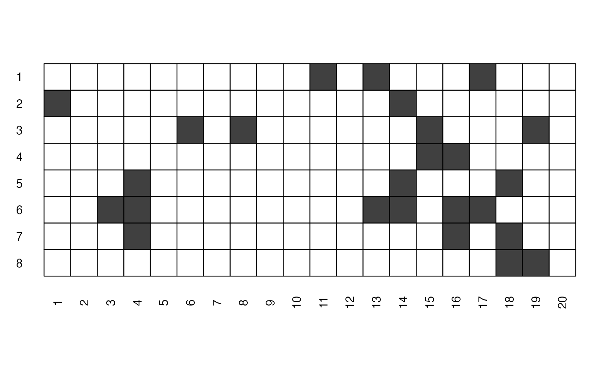

This fonctions plots, for each of the model, the
signpred( matbin, pred.lablength = max(sapply(rownames(matbin), nchar)), labsize = 1, plotsize = 12 )
| matbin | Matrix with 0 or 1 entries. Each row per predictor and a column for every model. 0 means the predictor is not significant in the model and 1 that, on the contrary, it is significant. |
|---|---|
| pred.lablength | Maximum length of the predictors labels. Defaults to full label length. |
| labsize | Size of the predictors labels. |
| plotsize | Global size of the graph. |
A plot window.
This function is based on the visweb function from
the bipartite package.
Vazquez, P.D., Chacoff, N.,P. and Cagnolo, L. (2009) Evaluating multiple determinants of the structure of plant-animal mutualistic networks. Ecology, 90:2039-2046.
See Also visweb
Bernd Gruber with minor modifications from
Frédéric Bertrand
frederic.bertrand@math.unistra.fr
https://fbertran.github.io/homepage/
